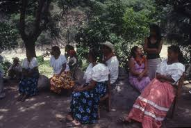
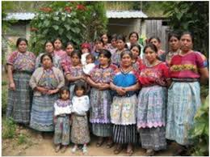
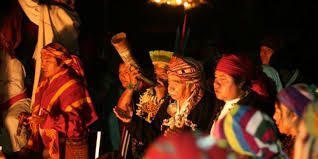
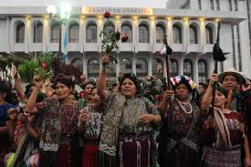

Los Kakchikles son originarios del medio oeste guatemalteco, un área que comprende los departamentos de Totonicapan, Sololá y Chimaltenango, casi todo el de Sacatepéquez y sectores de los de El Quiché, Quetzaltenango, Suchitepéquez y Baja Verapaz.

Las fiestas se organizan por medio de una junta de festejos que es integrada por miembros de la parroquia, la iglesia, las autoridades locales y la casa de cultura municipal y en ocasiones los comerciantes.
imagen
significado
audio

lengua

festividad

nomenglatura
Durante las fiestas se llevan a cabo danzas tradicionales como son la Danza de la Granada, la del Toro, los Moros y la Conquista. La música característica con la que se identifican son sones interpretados con marimba.